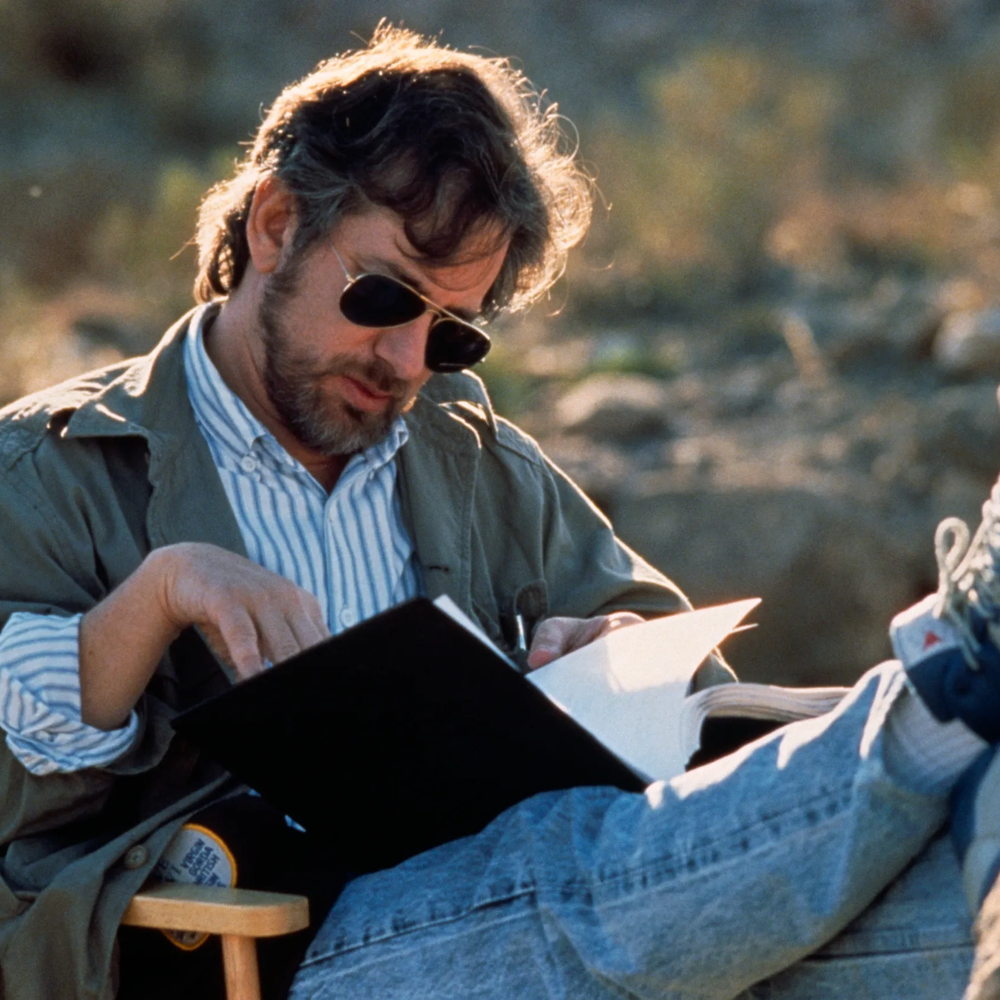
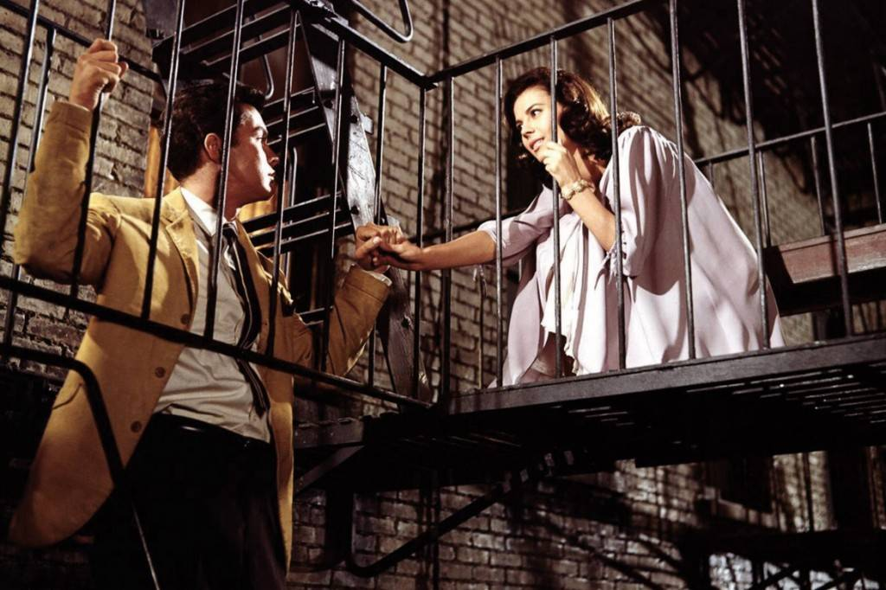
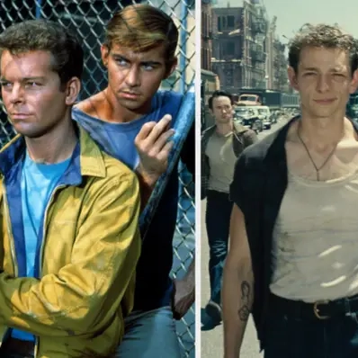

LEONARD BERNSTEIN
Lenoard Bernstein en 1988.
Issu d’une famille juive russe, Leonard Bernstein, de son vrai nom Louis Bernstein, est né le 25 août 1918 à Lawrence (États-Unis).
Bernstein est un compositeur, chef d’orchestre et pianiste. Ce qui le
caractérise, c’est sa facilité à passer d’un style à l’autre. Il
étudie à Harvard jusqu’en 1939, puis, rencontre les plus grands chefs
d’orchestre mondiaux. Il exerce ensuite l’enseignement de la direction
et de la composition. Il devient ensuite mondialement connu grâce à la
télévision. En 1957, il devient le compositeur principal de la comédie
musciale mythique «
Bernstein est un excellent pianiste, s’adaptant tout aussi bien aux grandes parties solistes qu’à celles d’accompagnateur.
En termes de « premier Américain à », Bernstein bat tous les records : premier compositeur américain à diriger un opéra entre les prestigieux murs de La Scala de Milan, premier musicien américain nommé directeur musical de l’Orchestre Philharmonique de New York, premier musicien classique à faire une carrière à la télévision.
La liste est longue et rend bien honneur au prolifique parcours de ce compositeur disparu subitement le 14 octobre 1990, des suites d’une crise cardiaque. « Music’s Monarch, Dies » titrait alors le New York Times.
STEVEN SPIELBERG
Steven Spielberg en 1989.
Steven Spielberg est un réalisateur, producteur et scénariste américain, né le 18 décembre 1946 en Ohio (États-Unis).
Il a commencé sa carrière en réalisant des épisodes de séries télévisées et des longs métrages pour Universal Pictures. Il se révèle au grand public américain et étranger en réalisant le téléfilm « Duel » qui est un immense succès et lui permet de réaliser ensuite la super-production « Les Dents de la mer » (1975), dont le succès lance sa carrière. Il enchaine alors les réussites. Dans les années 1980, il a également réalisé avec son ami George Lucas les trois premiers volets de la saga d'aventure fantastique « Indiana Jones » (1981, 1984, 1989).
WEST SIDE STORY
Tony et Maria en 1961.
« West Side Story » est né de la collaboration entre quatre hommes : le metteur en scène et chorégraphe Jerome Robbins, le compositeur Leonard Bernstein, le parolier Stephen Sondheim, et Arthur Laurents, l’auteur du livret.
« Dans le West Side à New York, deux bandes s'affrontent : les Jets, Américains blancs, et les Sharks, immigrés portoricains. Au cours d'un bal, Maria, rencontre Tony, l'ancien chef des Jets. Alors qu'ils tombent amoureux, la rivalité entre les deux clans s'envenime ».
America est l'une des chansons les plus connues de la comédie musicale américaine « West side story » composée par Leonard Bernstein. Dans cette chanson les Sharks s’opposent à leurs petites amies sur ce rêve américain. Si les filles sont plutôt enthousiastes et célébrent l’Amérique de la consommation et de la réussite, les garçons eux sont beaucoup plus réservés, célébrant la nostalgie de leur île et la difficulté à s’intégrer dans un pays où un accent trop marqué leur ferme les portes.
REMAKE (2021)
Comparaison d'acteurs, 1961/2021.
« West Side Story », dans sa version de 1961, est l’un des plus grands classiques de tous les temps. La bande originale, est écrite par le célèbre compositeur Leonard Bernstein.
En 2021, Spielberg a sorti son remake du film culte, toujours avec la musique légendaire de Bernstein sur la bande-son. Cette nouvelle version de « West Side Story » semble suivre les pas de son originale, puisqu’elle a été nommée pour 7 Oscars. Néanmoins, il y a eu pas mal de différences avec la version de 1961. En voilà un exemple :
Le film de 1961 comporte des éléments surréalistes. Par exemple, la confrontation à l’ouverture du film entre les Jets et les Sharks est bien plus gracieuce que violente. Spielberg mise plutôt sur le chaos dans sa version et c'est moins « gentil » que la première. Des coups de poing, ainsi qu'une véritable guerre. Ce changement de ton rend la version de Spielberg beaucoup plus réaliste.